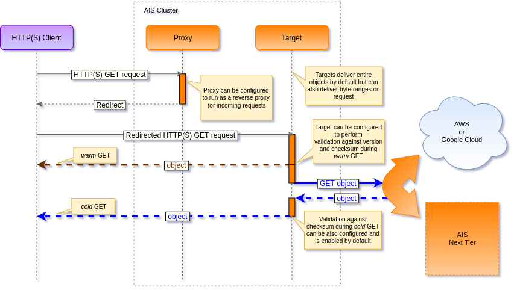
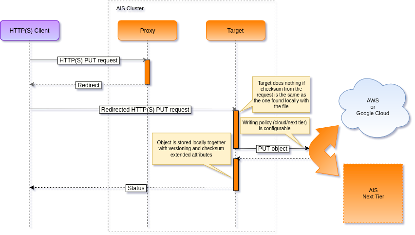

DATAPATH
Table of Contents
Read and Write Data Paths
GET object and PUT object are by far the most common operations performed by a AIStore cluster.
As far as I/O processing pipeline, the first few steps of the GET and, respectively, PUT processing are
very similar if not identical:
- Client sends a
GETorPUTrequest to any of the AIStore proxies/gateways. - The proxy determines which storage target to redirect the request to, the steps including:
- extract bucket and object names from the request;
- select storage target as an HRW function of the (cluster map, bucket, object) triplet,
where HRW stands for Highest Random Weight;
note that since HRW is a consistent hashing mechanism, the output of the computation will be
(consistently) the same for the same
(bucket, object)pair and cluster configuration. - redirect the request to the selected target.
- Target parses the bucket and object from the (redirected) request and determines whether the bucket is an ais bucket or a Cloud-based bucket.
- Target then determines a
mountpath(and therefore, a local filesystem) that will be used to perform the I/O operation. This time, the target computes HRW(configured mountpaths, bucket, object) on the input that, in addition to the same(bucket, object)pair includes all currently active/enabled mountpaths. - Once the highest-randomly-weighted
mountpathis selected, the target then forms a fully-qualified name to perform the local read/write operation. For instance, given amountpath/a/b/c, the fully-qualified name may look as/a/b/c/<content_type>/<provider>/<bucket_name>/<object_name>.
Beyond these 5 (five) common steps the similarity between GET and PUT request handling ends, and the remaining steps include:
GET
- If the object already exists locally (meaning, it belongs to an ais bucket or the most recent version of a Cloud-based object is cached
and resides on a local disk), the target optionally validates the object’s checksum and version.
This type of
GETis often referred to as a “warmGET”. - Otherwise, the target performs a “cold
GET” by downloading the latest version of the object from the Cloud. - Finally, the target delivers the object to the client via HTTP(S) response.

PUT
- If the object already exists locally and its checksum matches the checksum from the
PUTrequest, processing stops because the object hasn’t changed. - Target streams the object contents from an HTTP request to a temporary work file.
- Upon receiving the last byte of the object, the target sends the new version of the object to the Cloud.
- The target then writes the object to the local disk replacing the old one if it exists.
- Finally, the target writes extended attributes that include the versioning and checksum information, and thus commits the PUT transaction.
